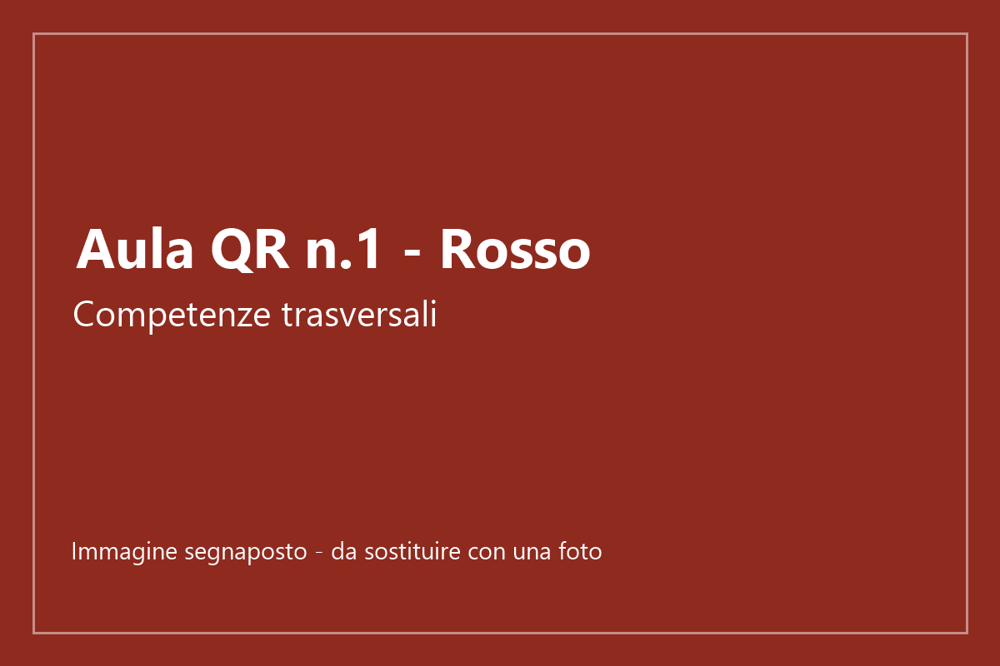

In cybersecurity non basta conoscere la tecnologia: serve saper lavorare con le persone, comunicare i rischi e affrontare problemi complessi.
In questo spazio scopri le competenze trasversali che accompagnano ogni percorso ITS Academy (istituto tecnico superiore): comunicazione, lavoro di squadra, project management, problem solving, organizzazione aziendale, inglese tecnico, sicurezza sul lavoro e GDPR (regolamento europeo sulla protezione dei dati personali).
Sono abilità utili in ogni ambito professionale, perché un tecnico efficace non risolve solo un problema tecnico: sa spiegarlo, condividerlo e trasformarlo in una soluzione concreta.
Nel corso AI Cybersecurity Specialist (intelligenza artificiale applicata alla sicurezza), ad esempio, sapere raccontare una vulnerabilità a un'azienda è importante quanto saperla individuare.

Ultimo aggiornamento: 13/11/2026